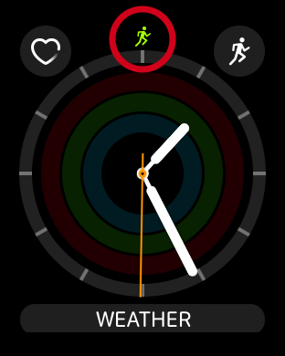

Apple Watchでワークアウトの測定する場合、1つのアプリでのみ測定が可能です。
複数のアプリを続けて起動しても、後で起動したアプリが有効になります。
これは、Apple Watchの仕様になるため、Zones以外のアプリでも同様です。
ワークアウト実行中は、時計画面の上部に緑色のアイコンが表示されます。
このアイコンをタップすると、現在有効になっているワークアウトアプリが起動します。

Zonesでは他アプリで登録したワークアウトも表示することができます。
「他アプリで登録したワークアウトの表示について」も参考にしてください。